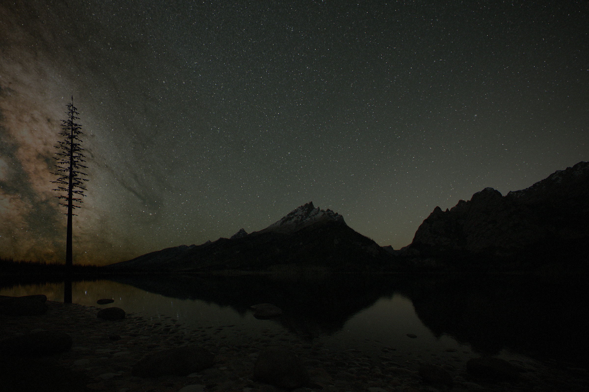
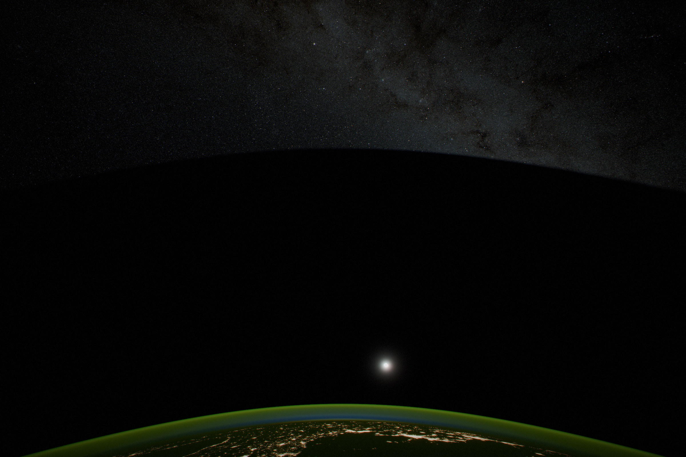
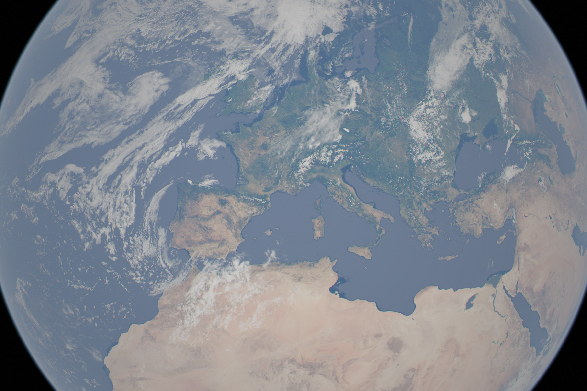

Earth inside the swarm
Every watt the sails catch leaves them as heat, and Earth absorbs its share. The design of the whole sphere follows from keeping that share small. What is left is a planet with its full sunlight, a changed night sky, and a dial for its climate.
In short
- Earth keeps its sunlight at every stage. Sails crossing the line from the Sun to Earth turn edge-on as they pass, and once the sphere is closed Earth looks out through a window 40,600 km across.
- The heat peaks when the sphere is half built, at 8.6 W/m², two CO₂ doublings, from the far side’s fronts seen through the gaps. Narrowing Earth’s window by 3.6% cancels it, at a cost of about 6% of the world’s rain. Closed, only the mirror cap’s cold back is left: 0.56 W/m², a quarter of a per cent of sunlight to cancel.
- The night sky brightens, then goes black. The glow is f (1 − f) ρ S / π: it peaks at half, about 24 lux on the ground at the end of twilight, a hundred full Moons. Closed, the sky within 75–85° of the Sun is black, with no stars, no zodiacal light and no planets.
- The solar wind stops, and with it most aurorae and geomagnetic storms.
- Light can then be placed. The window sets the whole planet’s sunlight; mirrors in Earth orbit fed through it, and lasers from the cap, light regions and single fields. Temperature follows closely. Rain is harder, but the swarm can make it.
The heat Earth gets
A sail that catches sunlight sheds all of it again as infrared from its two faces. Earth absorbs whatever part of that it can see. The sphere is designed so that Earth sees as little warm surface as possible:
- The part of the sphere in front of Earth is mirrors from the start. Their cold backs face Earth. Within 23° of the Sun–Earth line, no compute sail ever shows Earth its 382–419 K back.
- Through the mirrors’ gaps, Earth sees the far side’s fronts. While the sphere is open those fronts face the Sun and Earth together. They are switched to a low infrared emissivity, 0.1, so they radiate mostly from their backs, away from Earth.
- The mirrors themselves show Earth their insulated backs: 1.4 W/m² leaks through 40 layers of foil.
Averaged over Earth, that gives
H(f) = 0.56 f + 0.226 · f (1 − f) · 0.1 σT(f)⁴ W/m²
The first term is the cap’s back, which grows with coverage. The second is the far side seen through the near side’s gaps: a wall filling a disc 72° in radius round the Sun fills sin²(72°) of a sunward plane, a quarter of that averaged over a sphere. It vanishes both when there is nothing to see and when the gaps close.
earthForcing). Hover for the sunlight taken to cancel it and the rain lost.Without these choices the numbers would be enormous. With identical compute sails everywhere, Earth would see the hot backs of those between it and the Sun: over 500 W/m² once closed, more than twice the sunlight Earth absorbs. An open swarm with ordinary glass fronts sends Earth about 5 W/m² for every per cent of the Sun it catches.
Cancelling it
The heat is cancelled by letting slightly less sunlight through Earth’s window. Earth absorbs about 240 W/m² of sunlight averaged over its surface, so each W/m² of infrared is offset by taking away 1/2.38 = 0.42% of the sunlight. At half built that is 3.6%; once closed, 0.24%. Earth’s mean temperature stays where it is.
The swap is not neutral. Sunlight drives evaporation; infrared absorbed in the air mostly does not. Climate models running balanced experiments of this kind (GeoMIP) find global rainfall falls about 0.76% for each W/m² swapped. The pattern changes too: sunlight removed evenly cools the tropics more than the poles, leaving the poles about 0.23 W/m² warmer for each W/m² cancelled. A shade shaped by latitude and season can remove much of that.
| Stage | Year | Heat | Window narrowed | Rainfall |
|---|---|---|---|---|
| One in ten thousand | 2129 | 0.003 W/m² | 0.001% | −0.002% |
| 1% | 2141 | 0.28 W/m² | 0.12% | −0.2% |
| 10% | 2149 | 2.6 W/m² | 1.1% | −2.0% |
| Half | 2178 | 8.6 W/m² | 3.6% | −6.3% |
| 99% | 2342 | 0.94 W/m² | 0.40% | −0.7% |
| Closed | 2361 | 0.56 W/m² | 0.24% | −0.42% |
The rain lost in the middle of the build is the largest cost the sphere imposes on Earth, and it lasts a century or so. It can be paid back directly, because the swarm can supply rain (section 6).
The earlier, open designs, for comparison
The page’s earlier default was an open swarm reaching 83% of the Sun with a gap round the Sun–Earth line and infrared-dark fronts on every sail. Earth absorbed 47 W/m², twelve CO₂ doublings, cancelled by a shade at L1 taking 19.6% of Earth’s sunlight. The rain loss, about 0.76% per W/m² at small swaps and saturating, would have been about 30%, and light-limited crops would have lost a few to ten per cent of their yield. Before that, a gentler design held Earth to 1 W/m² and the swarm to 3.8% of the Sun, spread along Earth’s own orbit on the far side of the Sun. The closed sphere is better for Earth than either.
Daylight
By day nothing changes that the eye can see. Sails crossing the line from the Sun to Earth turn edge-on as they pass, at every stage, so no sail ever transits the Sun as seen from Earth, and there is no flicker and no shadow. The 0.12–3.6% narrowing of the window is a uniform dimming smaller than a thin high cloud. Once closed, Earth sees the Sun through a window it cannot see the edges of.
The one thing that changes by day is above the atmosphere: the solar wind (section 4).
The night sky
At night, looking toward the Sun’s side of the sky, Earth sees through the cap’s gaps to the far side of the shell, where every sail shows its sunlit front. Each square metre of sky covered by a front at full sunlight S has the radiance of a Lambertian surface of reflectance ρ, and the near side lets through (1 − f) of it:
L = f (1 − f) ρ S / π
with ρ = 0.004, the film’s visible reflectance averaged over all its hardware, and S the sunlight at 0.95 AU. The glow is uniform out to the shell’s edge, arcsin(0.95/d) from the Sun with Earth d AU out, about 70°. It is symmetric: the same at f and 1 − f, the same at 1% and 99%. It peaks at half, about 45 cd/m², the brightness of the sky well into dusk.
skyLux), which integrates the disc over the sky and through the air. Hover for the glow’s own brightness.Behind the glow, the stars dim. Every line of sight within the shell’s edge crosses the cap once and the far side once, so starlight from behind the sphere falls as (1 − f)²: to just over half at a quarter built, to a quarter at half, to one part in ten thousand at 99%. Between the shell’s edge and the cap’s, only the cap dims them. The zodiacal light and the planets beyond the sphere are lit only by the sunlight that escapes, (1 − f).


Once closed
The cap’s outer layer sits at 0.98 AU. Every line of sight from Earth that meets it meets the cap’s cold back, at about 170 K, which reflects nothing visible. So the sky is black out to the cap’s edge, arcsin(0.98/d) from the Sun: 78.5° at 1 AU. Earth’s orbit is not quite circular, so the edge moves through the year, from 74.6° in early July, when Earth is farthest from the Sun, to 85.3° in early January, when Earth passes just outside the sphere.
At mid-latitudes on a summer evening, at the end of twilight, the black reaches some 57° up the western sky. At midnight at 44° N it is still 52° up the northern sky in June and 16° up in December; near the equator at the equinoxes it has set by midnight. Elsewhere the stars and the Milky Way are as they are today, a shade darker, because the zodiacal light and the gegenschein are gone everywhere: the dust outside the sphere is no longer lit. The planets go out. Mercury and Venus are inside the sphere; Mars and everything beyond get the shell’s infrared instead of sunlight and reflect nothing visible. The Moon shines only while its own window is open. Airglow, which is powered by the day’s ultraviolet, is unchanged.


The solar wind and cosmic rays
The shell absorbs the solar wind everywhere except the windows. The column through Earth’s window spreads, at the wind’s thermal speed of about 50 km/s, over about 375,000 km by the time it reaches Earth: about 0.3% of today’s flux. Geomagnetic storms and most aurorae end.
With no wind beyond 0.95 AU, the heliosphere, the bubble the wind blows in the interstellar medium, collapses. Galactic cosmic rays then arrive at 1 AU with the spectrum Voyager measured outside it, without the modulation the wind provides today. Earth’s magnetic field and air still stop most of them. The change in dose should be largest near the poles and on polar flights, and small at the equator. The model has not quantified it.
The window as a climate dial
Closure turns Earth’s sunlight into something the swarm sets.
- Dimming. Narrowing the window, or leaving some of the mirrors in it partly turned, dims all of Earth evenly, from full sunlight to none.
- Brightening. A cap mirror tilted slightly sends its light at Earth. From 3 million km its spot is 28,000 km across, so about 40% of it lands on Earth’s disc. The cap can add sunlight to the whole planet, but it cannot aim at a region.
The window sim on the main page and in Closing the sphere shows both. The global dial answers the problem of the sphere’s own heat. It can also answer other problems: a quarter of a per cent of sunlight is worth about 0.56 W/m², and about one per cent would cancel all the warming humanity has caused so far.
Placing light region by region
With this much energy, the amount needed to change a region’s climate is trivial. Adding 50 W/m² of daylight, averaged over a million square kilometres, takes 5×10¹³ W of light: about 10⁻¹³ of what the swarm catches. What limits regional control is how sharply light can be aimed, and how the atmosphere answers.
How sharply sunlight can be placed
The Sun is not a point. It is 0.53° across, and no arrangement of mirrors or lenses can focus its light into a spot narrower than the distance times that angle: the radiance of light cannot be increased by optics (conservation of étendue). So a mirror or shade at distance d blurs its spot or shadow over about 0.0093 d.
| Where | Blur | What it can control |
|---|---|---|
| The cap, 3 million km | 28,000 km | The whole planet |
| L1, 1.5 million km | 14,000 km | Global level, the split between hemispheres, the seasons |
| Orbit at 10,000 km | 90 km | Regions and countries |
| Orbit at 1,000 km | 9 km | Valleys, cities, single farms |
Regional control therefore needs mirrors and shades in Earth orbit, steered toward a target and turned edge-on when not over it. They need the light to reach them, so Earth’s window is widened to cover their orbits. About 10¹⁰ kg of mirrors would do for the example above, since each is over its target about 1% of the time. A first 18 m orbital mirror of this kind, with a footprint of about 5 km, was approved for launch in July 2026.
Laser light is not bound by the Sun’s size. Sunlight turned into laser light at about 10% and beamed from a 1 km aperture 3 million km away makes a spot 2.44 λd/D ≈ 7 m across at 1 µm. The laser stations sit in the cap, the only part of the swarm that can see Earth; the compute sails beam power to them over the same laser links they already use. Land and sea absorb laser light as well as sunlight, and plants grow under red and blue.
What the atmosphere lets you do
- Temperature: yes, locally. Surface temperature follows the local energy budget. With tens of W/m² a region’s winter can be raised or its summer lowered by several kelvin, down to the scale of a valley. Snow is the catch: it reflects most of the added light, so warming a snowy winter first means melting the snow.
- Summer rain: it can be taken away. Shading land in summer weakens the heating that drives convection and the monsoon’s inflow from the sea. With even global dimming, models show monsoon rain falling 5–7% over North America and East Asia. Shading aimed at land in summer dries summers further. That is the Mediterranean pattern, but summer convective rain is also what the American Midwest, the North China Plain and India farm on.
- Winter rain: it can barely be moved. It needs an ocean upwind and a storm track overhead, and storm tracks are planetary in scale. Changing the gradient from equator to pole by season can shift them, and the subtropical highs, by a few degrees of latitude. It cannot bring ocean storms to an interior 1,000 km from the coast.
- Moisture is conserved. Rain moved to one place is taken from another unless more water is evaporated. Shading one hemisphere moves the tropical rain belt away from it; in the models, that is drought in the Sahel.
Making rain
The swarm can supply water as well as move it. Evaporating a metre of sea water a year over ten million km² takes 10¹⁶ kg × 2.45 MJ/kg a year, 8×10¹⁴ W, about 2×10⁻¹² of the Sun. Heating the right stretch of ocean upwind puts the moisture where the winds will carry it. To make it fall, a beam at a wavelength the air absorbs, in one of water vapour’s infrared bands, heats a column of air rather than the ground. Warmed a few kelvin, the air rises, cools as it expands and rains out its water: the trigger of an afternoon thunderstorm, placed where it is wanted.
Weather cannot be forecast beyond about two weeks. For the same reason, small, well-timed inputs can steer a chaotic system, if it is observed completely and the inputs can be placed quickly; that is the basis of chaos control (Ott, Grebogi and Yorke 1990). Nobody has steered weather this way. Physics allows it; climate models have not tested it.
Can more land be made Mediterranean?
A Mediterranean climate has three ingredients: mild winters, with the coldest month between 0 and 18 °C; a dry summer under the subsiding air of a subtropical high, often over a cold current; and a wet winter, when the storm track swings toward the equator. It occurs naturally on west coasts between 30° and 45°.
- West coasts at 40–55°, such as France and Britain, the Pacific Northwest, southern Chile, Tasmania and New Zealand: plausibly yes. Seasonal shading can push the dry-summer belt a few degrees poleward. Its equatorward edge then dries toward steppe, so unless that edge is compensated the belt moves rather than grows; northern land is wider at 45–55° than at 30–40°, so the area could still grow.
- Continental interiors: only half of it. The temperatures can be made Mediterranean and the summers dried, but the winter rain cannot be supplied by steering. With this much energy, water can: desalinating and pumping 500 mm a year onto ten million km² is about 5×10¹⁵ kg a year, a few terawatts. That is irrigated Mediterranean farming rather than a Mediterranean climate.


No climate model has run orbital shading controlled at the scale of a country. The studies that exist are global or by latitude: two shades near L1 kept nearly 40% of the surface within 0.1 K of its original climate, against under 10% for a single shade (Sánchez and McInnes 2015, a simple energy-balance model); shading by latitude and season cut the worst-off region’s change in temperature and rain by about 30% (MacMartin et al. 2013); and feedback control at four latitudes held three targets at once (GLENS). Regional outcomes depend on how the circulation responds, which simple models fix and full models disagree on.
And whoever steers the mirrors holds every country’s weather. One region’s new Mediterranean summer is another’s lost monsoon. The physics makes this possible; it says nothing about who should decide.
Light for habitats
Habitats in space, O’Neill cylinders and the like, can be lit the same two ways. Near Earth’s orbit each can have a window of its own, wide enough that the habitat sees the whole Sun through it: about 70,000 km across at Earth’s distance. A million such windows would let out 1.5% of the Sun.
Farther out that stops working, because the window must grow with the gap between the habitat and the sphere: 520,000 km across at Mars’s distance, 1.1 million km at Jupiter’s. A million habitats at Jupiter’s distance would need four times as much window as the sphere has sky, and would still get only a twenty-seventh of Earth’s sunlight.
So the swarm sends them power instead. A laser beam does not spread with the Sun’s half-degree width: a transmitter 10 km across lands a beam 150 m wide at Jupiter’s distance and 1.5 km wide at 40 AU. Each habitat turns the beam back into daylight with lamps tuned to the spectrum its people and crops want, and sets its own days, seasons and weather. A large cylinder, 8 km across and 32 km long, needs about 10¹¹ W of daylight; a million of them, about 10¹⁷ W, which after the losses of converting sunlight to electricity, to laser light and back is a few billionths of the Sun.
Open questions
- A climate-model ensemble for this kind of forcing: infrared added from the sunward sky, sunlight removed by day, peaking at 8.6 W/m² for a century, then regional shading on top.
- Cosmic rays without a heliosphere: the dose at the surface and at flight altitudes, by latitude.
- Switchable infrared fronts at swarm scale, and their emissivity over centuries.
- Governance of a climate that can be set.
Sources and code
- Project notes:
docs/closed-swarm.md,docs/full-swarm.md,docs/earth.md; studiesdocs/data/earth_safe.jsonandearth_safe_skeptic.json. - Model:
src/model/hybrid.js(earthForcing,skyLux,discGroundFactor,FIXED.rainPerW,polarPerW,capIR); rendersrender/sky_map.py. - Kravitz et al., the Geoengineering Model Intercomparison Project (GeoMIP), and Tilmes et al. (2013) on the hydrological response to solar reduction.
- Sánchez and McInnes (2015), “Optimal sunshade configurations for space-based geoengineering near the Sun–Earth L1 point”, PLOS ONE.
- MacMartin, Keith, Kravitz and Caldeira (2013), “Management of trade-offs in geoengineering through optimal choice of non-uniform radiative forcing”, Nature Climate Change 3.
- Tilmes et al. (2018), the Geoengineering Large Ensemble (GLENS), CESM.
- NCAR (2013), geoengineering and monsoon rainfall; Haywood et al. (2013), Sahel drought under hemispheric aerosol forcing.
- Ott, Grebogi and Yorke (1990), “Controlling chaos”, Physical Review Letters 64.
- Sky & Telescope (2026), Reflect Orbital’s space mirrors approved for launch.
- O’Neill (1974), “The colonization of space”, Physics Today 27.